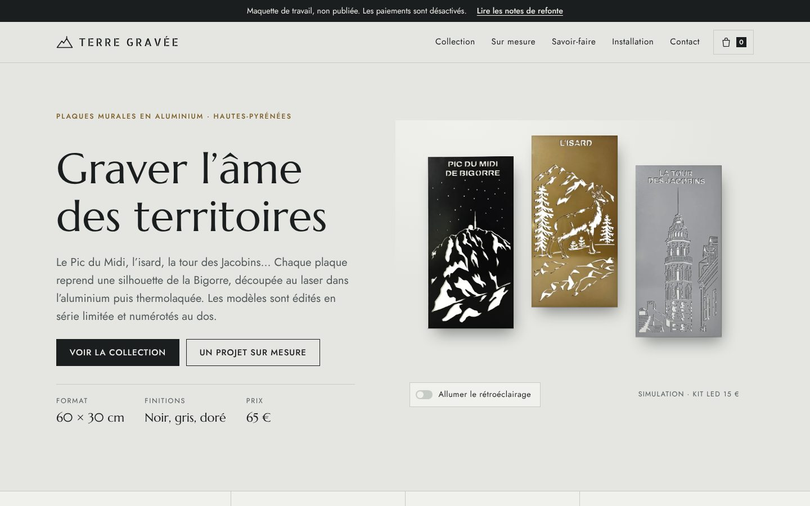
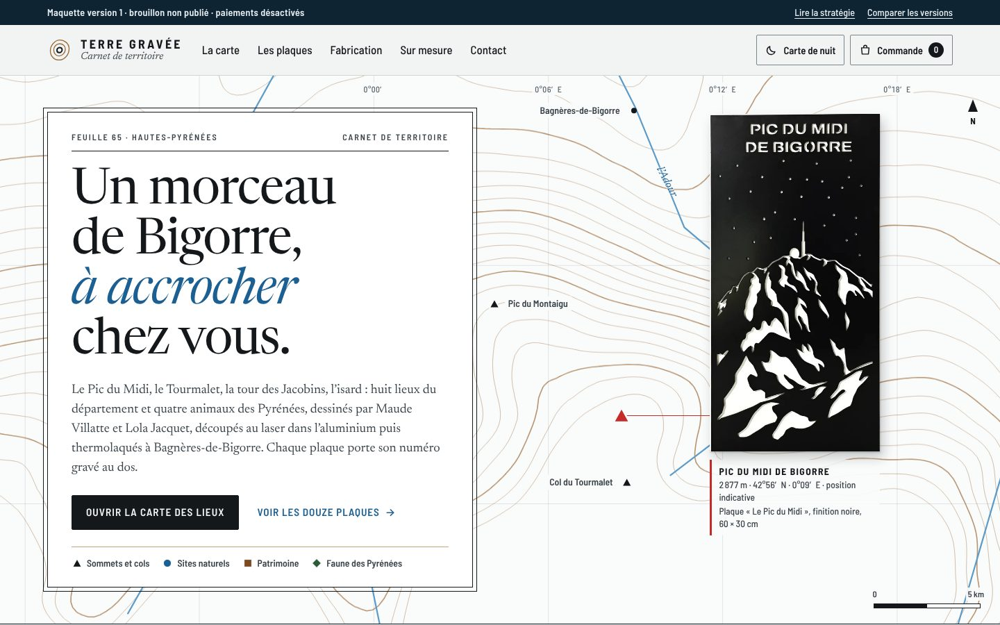
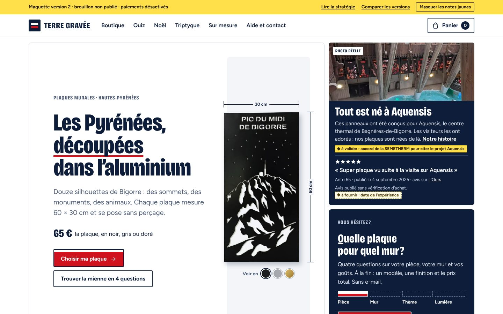
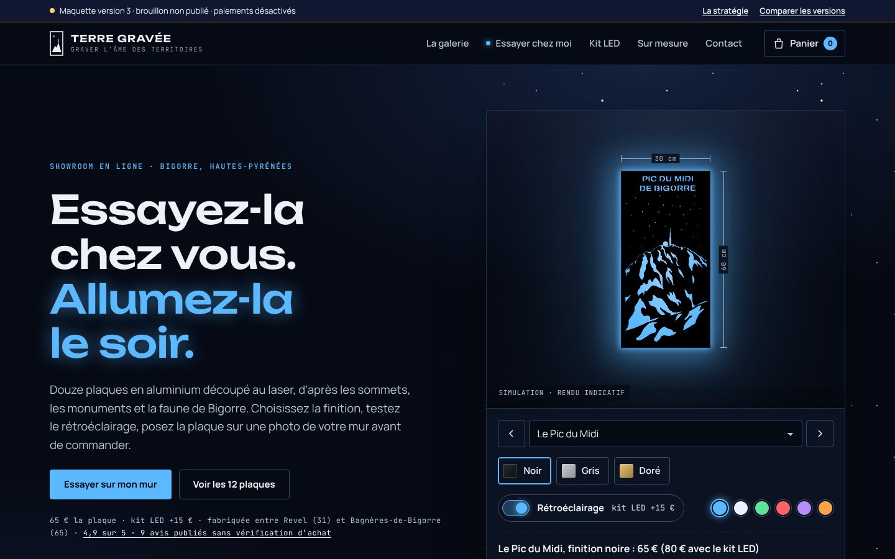

Terre Gravée
Quatre directions pour terregravee.fr, construites avec le vrai contenu du site. Ouvrez-les, cliquez partout, ajoutez au panier : rien n’est envoyé ni payé.

La première maquette. Les plaques sont accrochées comme dans une galerie, avec leur ombre portée et un cartel par modèle. Un bouton simule le kit LED la nuit.

Un atlas de la Bigorre. Chaque plaque raconte son lieu, et une carte interactive des Hautes-Pyrénées relie les modèles à leurs sommets, villages et monuments.

Les codes des marques qui vendent en direct : quiz pour trouver sa plaque, lot de trois, kit LED proposé au bon moment, guide cadeaux de Noël et preuve sociale près du bouton d’achat.

Un showroom de nuit inspiré du Pic du Midi. On essaie la plaque sur un mur d’exemple ou sur la photo de son propre mur, on choisit la finition et on allume les LED.
Chaque version a une page « Stratégie » qui explique ses choix de design et de marketing, avec les informations à fournir. Pour revenir ici depuis une version, utilisez le lien « Comparer les versions » du bandeau.